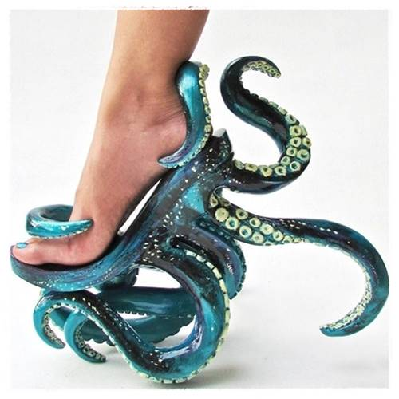

O sapato em formato de polvo
Esse sapato é um salto e seu criador é o designer Kermit Tesoro e o mesmo já fez designers para sapatos para cantoras como Lady Gaga e Madonna.

PARA VER TODOS OS ARQUIVOS
Clique aqui para ver mais sobre o salto tratado
PARA BAIXAR ESSE CONTEUDO EM PDF
Clique aqui para ver qual é o sapato mais confortável do mundo